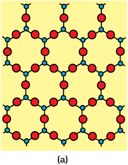
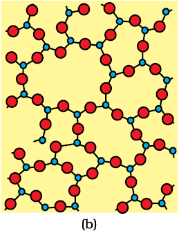
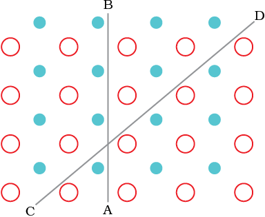

Solids can be classified as crystalline or amorphous on the basis of the nature of order present in the arrangement of their constituent particles. A crystalline solid usually consists of a large number of small crystals, each of them having a definite characteristic geometrical shape. In a crystal, the arrangement of constituent particles (atoms, molecules or ions) is ordered. It has long range order which means that there is a regular pattern of arrangement of particles which repeats itself periodically over the entire crystal. Sodium chloride and quartz are typical examples of crystalline solids. An amorphous solid (Greek amorphos = no form) consists of particles of irregular shape. The arrangement of constituent particles (atoms, molecules or ions) in such a solid has only short range order. In such an arrangement, a regular and periodically repeating pattern is observed only over short distances. Such portions are scattered and in between the arrangement is disordered. The structures of quartz (crystalline) and quartz glass (amorphous) are shown in the figure below. The two structures are almost identical, but in the case of amorphous quartz glass there is no long range order. The structure of amorphous solids is similar to that of liquids. Glass, rubber and plastics are typical examples of amorphous solids. Due to the differences in the arrangement of the constituent particles, the two types of solids differ in their properties.
 
Two dimensional structure of (a) quartz and (b) quartz glass
Crystalline solids have a sharp melting point. On the other hand, amorphous solids soften over a range of temperature and can be moulded and blown into various shapes. On heating they become crystalline at some temperature. Some glass objects from ancient civilisations are found to become milky in appearance because of some crystallisation. Like liquids, amorphous solids have a tendency to flow, though very slowly. Therefore, sometimes these are called pseudo solids or super cooled liquids. Glass panes fixed to windows or doors of old buildings are invariably found to be slightly thicker at the bottom than at the top. This is because the glass flows down very slowly and makes the bottom portion slightly thicker.
Crystalline solids are anisotropic in nature, that is, some of their physical properties like electrical resistance or refractive index show different values when measured along different directions in the same crystals. This arises from different arrangement of particles in different directions. This is illustrated in the figure below. Since the arrangement of particles is different along different directions, the value of same physical property is found to be different along each direction.

Anisotropy in crystals is due to different arrangement of particles along different directions.
Amorphous solids on the other hand are isotropic in nature. It is because there is no long range order in them and arrangement is irregular along all the directions. Therefore, value of any physical property would be same along any direction. These differences are summarised in the table below
Amorphous solids are useful materials. Glass, rubber and plastics find many applications in our daily lives. Amorphous silicon is one of the best photovoltaic material available for conversion of sunlight into electricity.
| Property | Crystalline solids | Amorphous solids |
| Shape | Definite characteristic geometrical shape | Irregular shape |
| Melting point | Melt at a sharp and characteristic temperature | Gradually soften over a range of temperature |
| Cleavage property | When cut with a sharp edged tool, they split into two pieces and the newly generated surfaces are plain and smooth | When cut with a sharp edged tool, they cut into two pieces with irregular surfaces |
| Heat of fusion | They have a definite and characteristic heat of fusion | They do not have definite heat of fusion |
| Anisotropy | Anisotropic in nature | Isotropic in nature |
| Nature | True solids | Pseudo solids or super cooled liquids |
| Order in arrangement of constituent particles | Long range order | Pseudo solids or super cooled liquids Only short range order. |